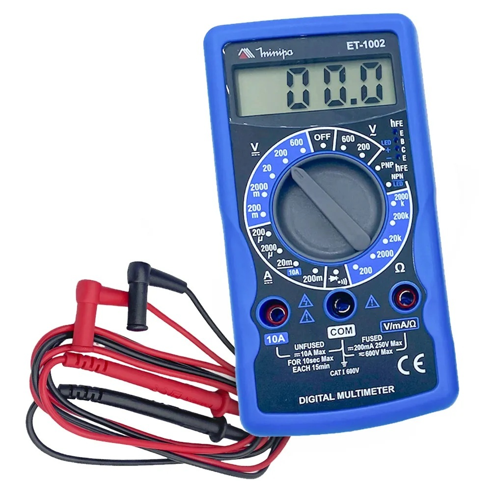
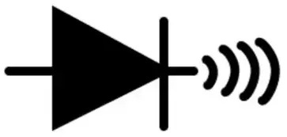

O que é o Multímetro?
O multímetro é uma ferramenta essencial para a área de eletricidade e da eletrônica, utilizado para realizar medições precisas de grandezas elétricas. Este instrumento versátil combina múltiplas funções em um único dispositivo, permitindo a medição de tensão, corrente e resistência elétrica.
Há dois tipos de multímetro: analógico e digital, com ambos sendo eficientes em suas medições.

Multímetro Analógico
O multímetro analógico utiliza um visor com ponteiro para marcar as grandezas medidas. Isso permite observar a amplitude de maneira mais clara, por ser possível acompanhar o movimento do ponteiro durante as medições. Por essa razão, ele é especialmente recomendado para monitorar variações de tensão em circuitos elétricos.
Multímetro Digital
Esse modelo exibe as grandezas medidas em um visor digital, sendo ideal para situações em que as variações nas medições não são significativas. No mercado, ele está disponível com dois tipos de visores: LED ou LCD.
O visor em LED é visível a grandes distâncias e adequado para ambientes com pouca luz. Por outro ladom, o modelo com visor em LCD consome menos energia, sendo indicado para uso em áreas abertas ou com alta luminosidade.
Como usar um Multímetro?
O multímetro é uma ferramenta extremamente versátil, capaz de realizar diversas medições, sendo elas:
Tensão (V): Conecte as pontas de prova em paralelo com o componente, garantindo que a escala (AC ou DC) esteja correta para a fonte de energia;
Resistência (Ω): Certifique-se de que o circuito esteja totalmente desenergizado antes de encostar as pontas de prova, caso contrário, o valor será impreciso ou o fusível poderá queimar;
Corrente (A): Diferente das outras medidas, esta deve ser feita em série, o que exige a interrupção do circuito para que a eletricidade flua obrigatoriamente por dentro do multímetro;
Continuidade: Utilize o modo de sinal sonoro para verificar se há rompimentos em cabos ou trilhas, facilitando a identificação de defeitos visuais invisíveis.
